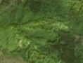
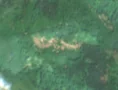

3,5 ha · Holobani, com. Lupșa
văzută schimbată prima dată pe 15 mai 2026


Autorizația cea mai apropiată nu acoperă tăierea: schimbarea cade în afara parcelei autorizate.
APV 2600050400320 · Ocolul Silvic Valea Arieșului, valabilă 12 mai 2026 – 30 iul. 2026, la 281 m
Terenul: pădure de stat, după amenajamentul silvic publicat.
Ce se vede în poze: În poza detaliată zona marcată era acoperită de pădure deasă. În poza «după» apar fâșii de pământ gol, deschis la culoare, cu margini clare, în timp ce pădurea din jur rămâne verde, deci copacii par tăiați.